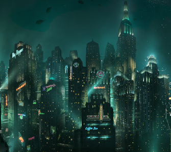
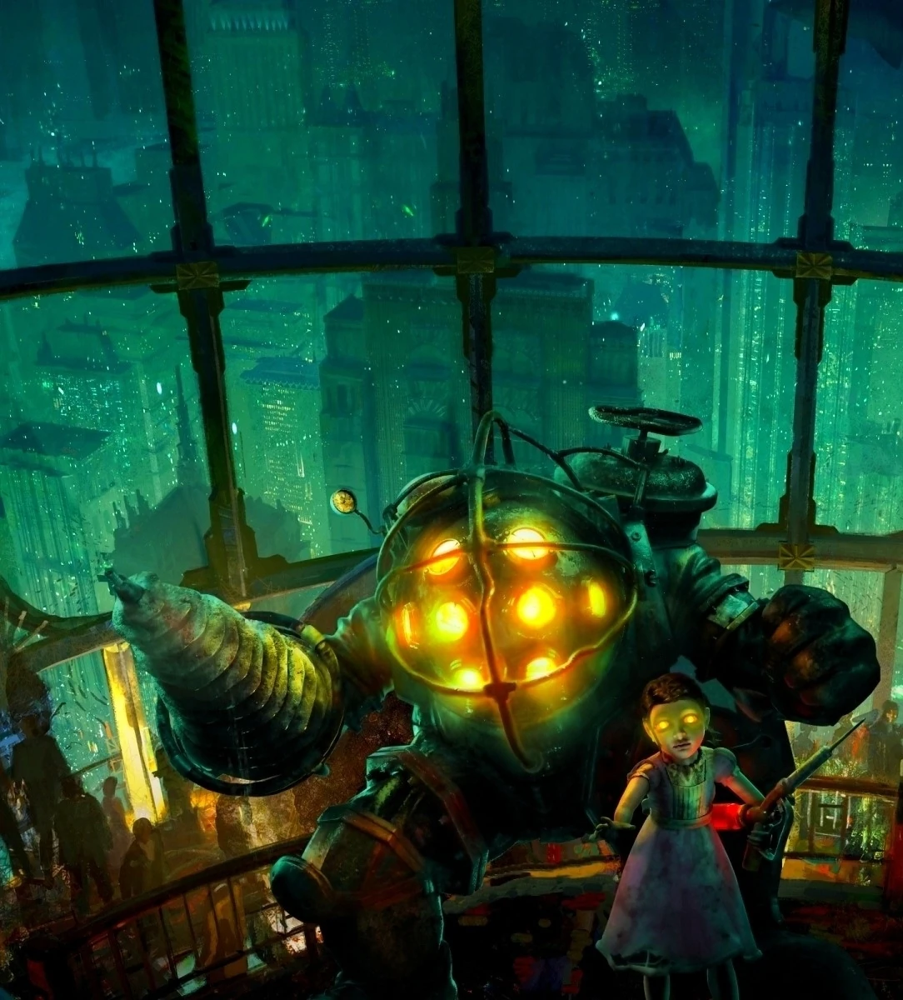

La Creación de Rapture
Rapture es una ciudad submarina construida a finales de la década de 1940 por Andrew Ryan, un empresario con una visión radical del mundo. Su objetivo era crear una sociedad completamente libre, donde el ser humano pudiera desarrollarse sin las limitaciones impuestas por gobiernos, religiones o normas sociales.
En este lugar, científicos, artistas e intelectuales podían trabajar sin restricciones, lo que llevó a un avance tecnológico sin precedentes. Durante sus primeros años, Rapture fue un símbolo de progreso, innovación y libertad absoluta.
Sin embargo, esta libertad extrema también permitió el desarrollo de experimentos peligrosos. El descubrimiento del ADAM, una sustancia que permite modificar el ADN humano, cambió el destino de la ciudad para siempre.
La posibilidad de obtener poderes sobrehumanos generó una dependencia masiva, provocando conflictos, adicción y finalmente una guerra civil que destruyó la sociedad que Ryan había construido.

Desarrollo de la Historia
La historia comienza en 1960, cuando un avión se estrella en medio del océano Atlántico. El único sobreviviente es Jack, quien logra llegar a un misterioso faro que sirve como entrada a Rapture.
Una vez dentro, Jack se encuentra con una ciudad en ruinas, llena de violencia y caos. A través de una radio, un hombre llamado Atlas lo guía, pidiéndole ayuda para escapar de la ciudad.
A medida que Jack avanza, descubre grabaciones de audio que revelan el pasado de Rapture, incluyendo la guerra entre Andrew Ryan y Frank Fontaine, un criminal que buscaba controlar el ADAM.
Durante su recorrido, el jugador se enfrenta a los Splicers, antiguos habitantes que han sido deformados física y mentalmente por el uso excesivo de plásmidos.
El punto más impactante de la historia ocurre cuando Andrew Ryan revela que Jack ha sido controlado mentalmente mediante la frase “Would you kindly”. Esto significa que todas las acciones del jugador no fueron decisiones propias, sino órdenes implantadas.
Este giro rompe la cuarta pared y obliga al jugador a cuestionar el concepto de libertad dentro del juego.
Finalmente, se revela que Atlas es en realidad Frank Fontaine, quien manipuló a Jack desde el inicio para lograr sus propios objetivos. El desenlace dependerá de las decisiones del jugador respecto a las Little Sisters.
Personajes Principales
Jack
Jack es el protagonista del juego y el único sobreviviente de un accidente aéreo que lo lleva a Rapture. A lo largo de la historia, parece ser un personaje común, guiado por otros para sobrevivir.
Sin embargo, más adelante se revela que su vida fue completamente manipulada desde su creación. Jack fue genéticamente modificado y condicionado mentalmente para obedecer órdenes específicas, lo que lo convierte en una herramienta al servicio de otros personajes.
Su historia representa la pérdida del libre albedrío y plantea una de las preguntas más importantes del juego: ¿realmente tomamos nuestras propias decisiones?
Andrew Ryan
Andrew Ryan es el fundador de Rapture y el principal ideólogo detrás de su creación. Su visión se basa en el individualismo extremo, donde el ser humano no debe estar limitado por gobiernos, religiones ni normas sociales.
Ryan construyó Rapture como una utopía para los grandes pensadores, pero su propia filosofía permitió el desarrollo sin control de experimentos peligrosos como el ADAM.
A lo largo del juego, Ryan se convierte en una figura trágica, ya que su sueño de libertad termina destruyendo la ciudad que creó.
Frank Fontaine / Atlas
Frank Fontaine es el principal antagonista del juego, aunque inicialmente se presenta como Atlas, un supuesto aliado que guía al protagonista.
Utiliza la manipulación y el engaño para controlar a Jack desde el inicio de la historia, demostrando ser un personaje extremadamente inteligente y ambicioso.
Representa la corrupción del poder y cómo las personas pueden utilizar a otros para alcanzar sus propios objetivos sin importar las consecuencias.
Little Sisters
Las Little Sisters son niñas que han sido modificadas genéticamente para recolectar ADAM de los cadáveres en Rapture. Su apariencia inocente contrasta con la oscura realidad en la que viven.
Son una parte fundamental del juego, ya que el jugador debe decidir si rescatarlas o explotarlas para obtener más ADAM, lo que genera un importante dilema moral.
Representan la inocencia corrompida por la ambición humana y las consecuencias de la ciencia sin ética.
Big Daddies
Los Big Daddies son criaturas fuertemente blindadas diseñadas para proteger a las Little Sisters. Están equipados con trajes de buzo y armas pesadas, lo que los convierte en algunos de los enemigos más peligrosos del juego.
A pesar de su apariencia intimidante, su comportamiento está basado en la protección, lo que los convierte en figuras casi trágicas dentro de la historia.
Simbolizan la relación entre control y protección, mostrando cómo incluso las criaturas más peligrosas pueden tener un propósito más profundo.

Análisis y Temas Principales
BioShock se destaca por su profundidad narrativa y filosófica, abordando temas complejos que van más allá del entretenimiento.
- Libre albedrío: El juego cuestiona si realmente somos libres o si nuestras decisiones están condicionadas por factores externos.
- Individualismo extremo: La visión de Andrew Ryan demuestra cómo una sociedad sin límites puede autodestruirse.
- Ética científica: El uso del ADAM muestra los peligros de la ciencia sin regulación.
- Manipulación: La historia demuestra cómo el control mental puede ser una herramienta de poder.
Video Explicativo
A continuación se muestra un video que resume la historia y el mundo de BioShock:
Opinión del Jugador
Deja tu opinión sobre la historia y los temas de BioShock.